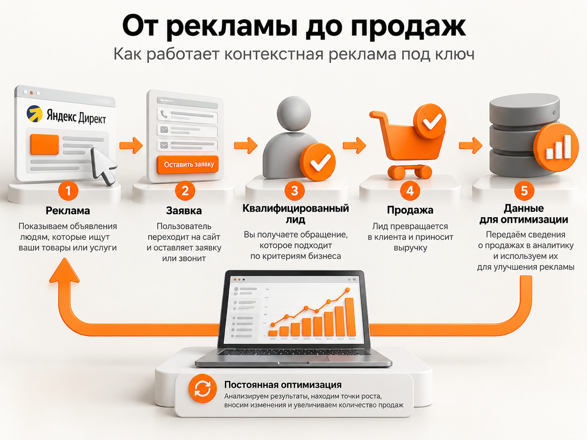

Блог о платном трафике
Контекстная реклама под ключ
Контекстная реклама под ключ - это настройка и постоянное ведение Яндекс Директа одним специалистом: анализ проекта и посадочной страницы, настройка Метрики и целей, запуск рекламных кампаний, контроль обращений и последующая оптимизация. Стоимость моей работы начинается от 30 000 ₽ в месяц, рекламный бюджет оплачивается отдельно.
В отличие от разовой настройки, работа под ключ не заканчивается после запуска. По мере накопления статистики я анализирую поисковые запросы, площадки, аудитории, стоимость и качество обращений, корректирую кампании и перераспределяю бюджет в пользу связок, которые дают бизнес-результат.
Подробности об услугах, кейсах и контактах собраны на сайте.
Что значит реклама под ключ
Реклама под ключ - это не только запуск кампаний, а постоянное управление рекламным каналом после запуска.
Работа включает подготовку, настройку и дальнейшие решения по данным: анализ обращений, поисковых запросов, площадок, аудиторий, объявлений и посадочной страницы.
Настройка Яндекс Директа или реклама под ключ - в чем разница
Разовая настройка заканчивается после подготовки и запуска кампаний. Формат под ключ включает тот же запуск, но дополнительно предполагает постоянный контроль результатов, анализ качества обращений и дальнейшую оптимизацию рекламы.
| Что сравниваем | Разовая настройка | Под ключ |
|---|---|---|
| Анализ проекта перед запуском | Да | Да |
| Настройка Метрики и целей | Да | Да |
| Подготовка и запуск кампаний | Да | Да |
| Контроль после запуска | Нет | Да |
| Анализ поисковых запросов и площадок | После передачи - на стороне клиента | Да |
| Анализ стоимости и качества обращений | После передачи - на стороне клиента | Да |
| Перераспределение бюджета | Нет | Да |
| Тестирование новых связок | Нет | По мере накопления данных |
Если нужно только подготовить и запустить кампании без дальнейшего ведения, это отдельный формат работы.
Что входит в контекстную рекламу под ключ
Состав работ зависит от проекта, но обычно процесс выглядит так:
| Этап | Что делаю |
|---|---|
| Анализ | Изучаю продукт, целевую аудиторию, конкурентов, спрос и текущую рекламу |
| Посадочная страница | Проверяю сайт, первый экран, оффер, формы и точки потери пользователей |
| Аналитика | Настраиваю или проверяю Яндекс Метрику и необходимые цели |
| Подготовка рекламы | Формирую структуру кампаний, аудитории, ключевые фразы и исключения |
| Объявления | Подготавливаю тексты, изображения и другие материалы |
| Запуск | Настраиваю стратегии, географию, расписание, бюджет и места показа |
| Ведение | Анализирую трафик, обращения, расходы и работу алгоритмов |
| Оптимизация | Отключаю слабые связки, тестирую новые и перераспределяю бюджет |
| Отчетность | Показываю основные показатели и изменения по проекту |
Работа специалиста оплачивается отдельно от рекламного бюджета. Рекламный бюджет расходуется непосредственно в Яндекс Директе, а дополнительные работы и расходы, не описанные на странице, не считаются включенными автоматически.
Это базовая схема. Интернет-магазину, B2B-компании, локальной услуге или образовательному проекту могут потребоваться разные типы кампаний и разная аналитика.
Анализ проекта перед запуском
Настройка рекламы начинается не в интерфейсе Яндекс Директа.
Сначала нужно понять, что именно мы собираемся рекламировать и насколько проект вообще готов принимать платный трафик.
Я смотрю:
- какие товары или услуги являются приоритетными;
- кто принимает решение о покупке;
- какой спрос уже существует;
- что предлагают конкуренты;
- куда будет попадать человек после клика;
- насколько понятен оффер;
- удобно ли оставить заявку;
- какие действия на сайте нужно отслеживать;
- какие результаты предыдущей рекламы уже есть.
Иногда проблема находится не в рекламном кабинете. Если страница плохо объясняет предложение или форма заявки неудобна, увеличение рекламного бюджета ситуацию не исправит.
Настройка Яндекс Директа
После анализа собирается структура рекламных кампаний.
В современном Яндекс Директе для performance-задач используется в том числе Единая перфоманс-кампания. В ней можно управлять местами показа, стратегиями, аудиториями и объявлениями. Директ позволяет работать с Поиском, Рекламной сетью Яндекса, Картами и другими доступными размещениями.
Нет универсальной структуры, которую можно одинаково применять ко всем проектам.
Для одного бизнеса основной объем качественных обращений может приходить с поиска. Для другого дополнительно нужны РСЯ, ретаргетинг, товарные объявления или отдельные кампании по разным сегментам аудитории.
Я выбираю структуру исходя из задачи проекта, а не из количества кампаний в кабинете.
Настройка аналитики и целей
Без нормальной аналитики нельзя понять, какие расходы действительно приводят к результату.
До запуска я проверяю Яндекс Метрику и настраиваю необходимые цели. Это могут быть:
- отправка формы;
- заказ;
- звонок;
- переход в мессенджер;
- прохождение определенного этапа воронки;
- другое значимое для бизнеса действие.
Как я оцениваю эффективность контекстной рекламы
Эффективность контекстной рекламы лучше оценивать не по кликам и CTR, а по цепочке от рекламного расхода до качественного обращения и продажи. Если доступны данные CRM, оптимизация должна опираться не только на факт заполнения формы, но и на качество лида и дальнейший бизнес-результат.
Реклама → заявка или звонок → квалифицированный лид → продажа → данные для дальнейшей оптимизации
Клики, CTR и CPC - диагностические показатели: они помогают понять, как реклама получает трафик, но не показывают ценность обращения для бизнеса. CPL отражает стоимость обращения, но не его качество.
При наличии CRM полезно сопоставлять рекламу с квалифицированными лидами и продажами. Данные о продажах и качестве обращений помогают принимать решения по бюджетам, аудиториям, объявлениям и структуре кампаний.
Реклама не гарантирует продажу: итог также зависит от продукта, посадочной страницы и работы отдела продаж.

Запуск и первые данные
После подготовки запускаются рекламные кампании и начинается сбор статистики.
На этом этапе не стоит делать выводы только по первым нескольким кликам. Смотрю на данные в комплексе:
- расход;
- количество и стоимость обращений;
- качество лидов;
- конверсию сайта;
- поисковые запросы;
- площадки;
- аудитории;
- объявления;
- работу выбранной стратегии.
После запуска задача не в том, чтобы как можно чаще менять настройки. Сначала нужно накопить достаточно данных, затем определить, где именно возникает проблема: в трафике, объявлении, посадочной странице, качестве обращения или дальнейшем этапе продаж. Только после этого имеет смысл менять кампании и проверять результат изменения.
Статья о цене клика в Яндекс Директе
Что происходит после запуска
Под ключ означает, что работа не заканчивается после прохождения модерации.
По мере накопления данных я:
- убираю нецелевые поисковые запросы;
- блокирую некачественные площадки;
- анализирую стоимость и качество обращений;
- перераспределяю бюджет;
- корректирую структуру кампаний;
- тестирую новые аудитории и объявления;
- слежу за расходом;
- проверяю работу аналитики;
- ищу причины просадок;
- масштабирую связки, которые показывают хороший результат.
Данные → причина → изменение → проверка результата
Ведение рекламы строится как цикл: сначала анализируются данные и качество обращений, затем определяется конкретная причина потерь, после этого вносится одно обоснованное изменение и проверяется его эффект. Смысл оптимизации - не в количестве правок, а в последовательном улучшении экономики рекламы.
Сколько стоит контекстная реклама под ключ
Стоимость моей работы начинается от 30 000 ₽ в месяц. Рекламный бюджет оплачивается отдельно.
Общие расходы состоят из двух частей:
- работа специалиста;
- рекламный бюджет Яндекс Директа.
Рекламный бюджет расходуется непосредственно на показы и переходы в Яндекс Директе. Его размер зависит от ниши, региона, конкуренции, объема спроса и стоимости трафика.
Перед стартом имеет смысл определить тестовый бюджет, запустить рекламу и уже по реальным данным оценивать экономику привлечения клиентов.
Кому подходит такой формат
Работа под ключ подходит, если бизнесу нужен специалист, который сам занимается рекламой от подготовки до дальнейшей оптимизации.
Особенно логичен такой формат, когда:
- нет отдельного директолога внутри компании;
- нужно запустить новый рекламный канал;
- существующая реклама работает, но ее результатами никто системно не занимается;
- требуется связать Директ с Метрикой и бизнес-показателями;
- нужно масштабировать уже работающие кампании;
- собственнику или маркетологу не хочется постоянно контролировать рекламный кабинет самостоятельно.
Когда контекстная реклама под ключ не решит проблему
Контекстная реклама под ключ не исправит слабое предложение, недоверие к сайту или экономику, при которой бизнес не может окупать платный трафик. Настройка Яндекс Директа влияет на качество и стоимость привлечения, но не заменяет продукт, посадочную страницу и работу отдела продаж.
- предложение заметно проигрывает конкурентам;
- сайт не объясняет ценность или вызывает недоверие;
- пользователю сложно оставить заявку;
- обращения плохо обрабатываются;
- допустимая стоимость привлечения клиента существенно ниже фактической стоимости рынка.
Почему я веду проекты лично
Я работаю как частный специалист и веду рекламные проекты самостоятельно. Между клиентом и человеком, который непосредственно принимает решения в рекламном кабинете, нет аккаунт-менеджера или цепочки исполнителей.
Это упрощает коммуникацию: вопросы по рекламе, аналитике, сайту и результатам обсуждаются напрямую со мной.
При необходимости я также смотрю посадочную страницу и саму воронку. Иногда изменение формы, оффера или структуры страницы влияет на стоимость заявки сильнее, чем очередная корректировка рекламной кампании.
Я занимаюсь интернет-рекламой более 10 лет и работаю официально как ИП.
Примеры работ
До выбора подрядчика лучше смотреть не только на обещания, но и на реальные проекты.
Промышленное оборудование. Для поставщика дробилок и шредеров задачей были обращения от предприятий в узкой B2B-нише. Поиск и РСЯ разделили, для мобильного трафика сделали турбо-страницы, а в аналитику включили формы, чат, обратный звонок и коллтрекинг. С 1 августа по 1 октября 2019 года при расходе 34 811 ₽ кампании дали 64 обращения со средней стоимостью 546 ₽ - подробнее в кейсе о продвижении промышленных дробилок.
Интернет-магазин японской косметики. Задачей было получать выручку, а не просто дешевые клики, поэтому решения принимались по данным электронной коммерции в Метрике. Поисковые кампании разделили по категориям и брендам, а динамические объявления, смарт-баннеры, РСЯ и ретаргетинг работали с ассортиментом и возвращали посетителей. За первые 20 дней реклама принесла 656 806 ₽ выручки при расходе 64 227 ₽ и 46 оплаченных заказах - полный разбор есть в кейсе интернет-магазина японской косметики.
Сеть химчисток в Санкт-Петербурге. Исходная задача - увеличить число обращений и снизить стоимость заявки, которая составляла 900-1100 ₽. Запустили шесть типов кампаний, добавили скидку 15% для новых клиентов и продублировали предложение в объявлениях. На последней неделе теста цена заявки снизилась до 543 ₽, а число обращений составило 66 - детали собраны в кейсе продвижения сети химчисток.
Что проверить перед заказом контекстной рекламы под ключ
Перед заказом важно проверить не количество обещанных кампаний, а прозрачность работы: кто ведет кабинет, как измеряются заявки и продажи, что входит в стоимость и кому принадлежат рекламные аккаунты и данные.
- кто непосредственно работает с рекламным кабинетом;
- кому принадлежит аккаунт Яндекс Директа и Метрики;
- как отслеживаются заявки, звонки и продажи;
- что входит в стоимость специалиста;
- рекламный бюджет входит в стоимость или оплачивается отдельно;
- есть ли реальные кейсы с понятными исходными данными и результатами.
Как начинается работа
Сначала я знакомлюсь с проектом и исходными данными.
Мне нужно понять:
- Что вы продаете.
- В каких регионах работаете.
- Какая посадочная страница будет использоваться.
- Запускалась ли реклама раньше.
- Какие обращения или продажи считаются целевыми.
- Какой рекламный бюджет планируется.
После этого можно определить структуру запуска и понять, какие инструменты действительно нужны.
Контекстную рекламу под ключ лучше строить не вокруг количества объявлений или ключевых слов, а вокруг конечной задачи бизнеса. Поэтому сначала определяется, какой результат необходимо получать и как его будем измерять, и только затем собираются рекламные кампании.
Частые вопросы
Когда появятся первые заявки?
Предсказать точный срок до запуска нельзя. Он зависит от спроса, бюджета, конкуренции, сайта, предложения и поведения пользователей. После запуска сначала собираются реальные данные, на основании которых рекламу можно оптимизировать.
Можно ли гарантировать определенную стоимость заявки?
Гарантировать конкретный CPL до получения статистики некорректно. Можно оценить спрос, бюджет и прошлые данные, но фактическая стоимость обращения определяется после запуска и зависит не только от рекламного кабинета, но и от продукта, сайта и отдела продаж.